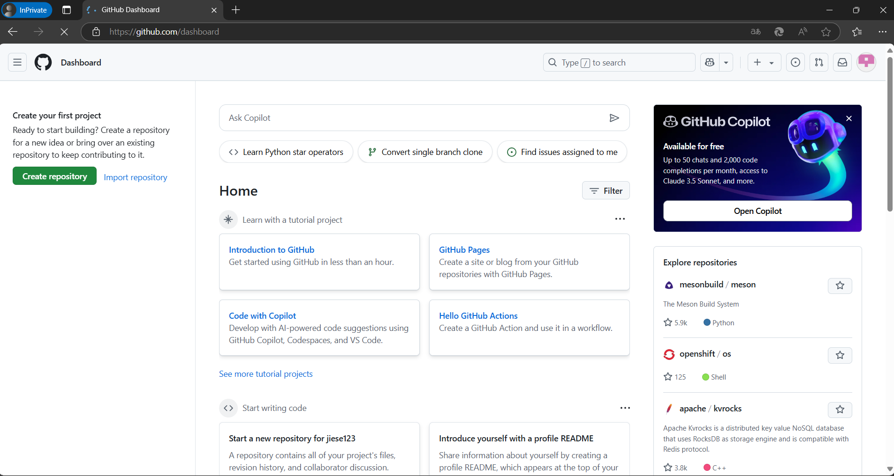
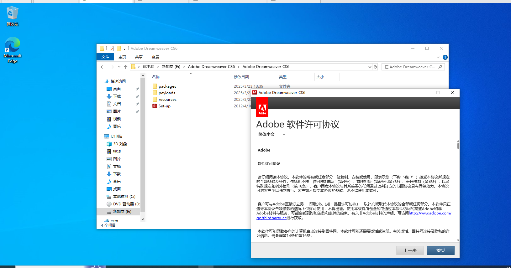

|
| |
| 首页 |
| 关于本网站 |
| 在线阅读 |
| 下载 |
| 常见问题 |
| 支持 |
| GitHub仓库 |
| |
教程：如何搭建一个戒色公益网站原创文章制作不易，转载时请注明原文出处《教程：如何从零开始搭建一个戒色公益网站(Part1:前期准备工作)》谢谢。 （查看PDF：链接） 前言在曾经，搭建一个网站成本比较高，需要租建服务器和一定的编程知识技能。不过如今，这并不困难。在GitHub Pages的出现后，可以创建免费的静态网站。 下面，就带大家一起创建一个戒色公益网站 Part 1:前期准备工作GitHub Pages部分： 1、 前往github.com（PS：若无法打开或打开异常缓慢。需使用代理，推荐一个代理：Watt Toolkit。链接：瓦特工具箱(Steam++官网) - Watt Toolkit） ） 2、 点击“Sign Up”
3、 输入邮箱，密码，用户名（PS：用户名最好和戒色有关，因为github pages的网站名是和用户名相同的。例如：a.github.io的对应用户就是a） 4、 点击”Continue”后会有一个人机验证，通过即可。
5、 会收到邮箱验证码，输入即可 6、 注册成功。 7、 点击“Create repository”。  8、 其中“Repository name”命名为：用户名.github.io,其他无所谓 9、 创建成功 10、 关于上传网页，可以在GitHub网页端直接上传，也可以下载GitHub Desktop。（GitHub Desktop | Simplecollaboration from your desktop）
11、 点击“Download now”。 12、 点击“Download forWindows(64bit)”(下载速度可能较慢) 13、 打开即可安装完成
14、 点击“Clone”。 15、 点击“Sign in” 16、 点击“Continue with browser” 17、 在浏览器中选择刚刚注册的账户，点击“Continue”即可 18、 点击”Authorize desktop”，可能会要求你输密码 19、 克隆刚刚创建的仓库。 20、 至此，Github Pages部分已完成。
DreamWeaver部分： 说到HTML编辑器，可能大家会想到繁复的代码，不过，使用DreamWeaver，可以避免这一点，因为其提供了网页设计的可视化编辑界面，本教程使用的是CS6 1、下载DreamWeaver CS6。（PS：该软件版本较老，本站直接提供安装包链接: https://pan.baidu.com/s/1WKo0TWPGdfShtIxLRMgH8A 提取码: 1234）
2、打开后点击“下一步”。 3、打开解压得到的目录里的“Set-up.exe”（解压时如遇弹出问题，点击“忽略”） 4、断网，然后点击“试用”。（这一步很关键）  5、点击“接受”。 6、点击“安装” 7、别急着打开，要安装破解补丁（链接: https://pan.baidu.com/s/1whQKH29NQhXPGIgxVrbIXA 提取码: 1234.不然用不了，有条件请支持正版QwQ） 8、复制这一个破解补丁（amtlib.dll） 9、粘贴到软件的安装目录下，并替换原有文件。 10、打开DreamWeaver。（如果是这个界面，那就可以了） 11、至此，所有准备工作已就绪。 下一篇Part2将带大家搭建好戒色网页（教程制作不易，转载时请注明原文出处谢谢）
|
| ||||||

2025Copyright (C) 戒色公益网站